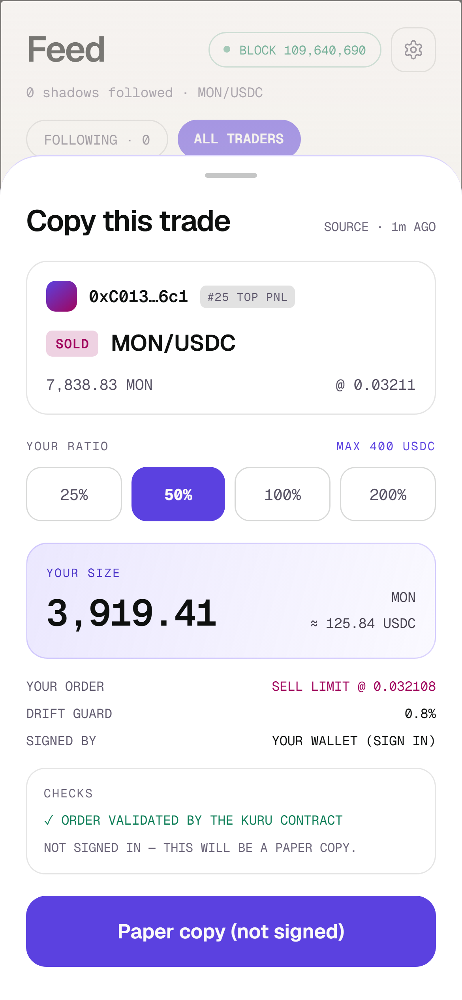

Building in public · Monad Metropolis
影
影
Kage
61,894
limit orders on Kuru.
One hour.
5 wallets · 4 are bots
Kage copies what real
traders
actually do.
Kuru · Monad mainnet · Android

✓ Validated by Kuru before you sign